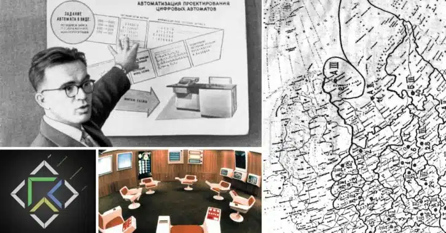
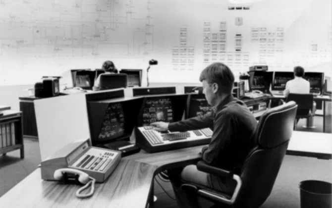
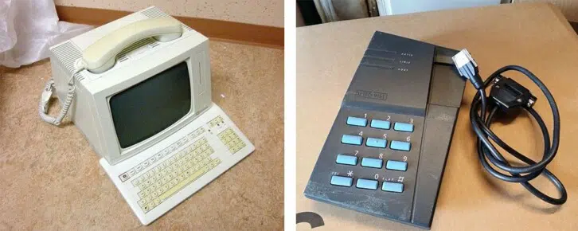

Under 1960-talet läggs grunden för framtidens IT-utveckling, långt innan internet finns. Sovjets satellit Sputnik får USA att storsatsa på försvarsforskning och myndigheten ARPA grundas. Datorerna som finns tar upp hela salar, men idén om ett sammankopplat nätverk mellan datorer formuleras 1963 och i slutet av årtiondet skickas det första meddelandet på Arpanet.
Under 1970-talet fortsätter utvecklingen av Arpanet, föregångaren till dagens internet. Både i Sverige och i USA görs tekniska framsteg och världens första mejl skickas 1971. De första hemdatorerna och spelkonsolerna dyker upp. I slutet av årtiondet skapar Jacob Palme KOM-systemet, ett slags tidigt chattrum.
Utvecklingen rusar framåt under 1980-talet. Datorer blir allt mer populära, journalisten Lars Orup försöker sig på dataintrång och protokollet TCP/IP blir standard för internets infrastruktur. Björn Eriksen registrerar .se-domänen och tar 1983 emot det allra första mejlet till Sverige.